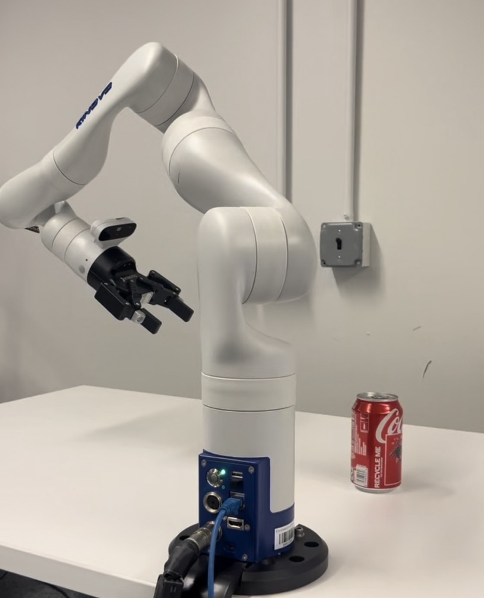

|
Haoming Li I am a research assistant in the General Robotics, Automation, Sensing and Perception (GRASP) Laboratory at the University of Pennsylvania under the supervision of Prof. Kostas Daniilidis. Prior to that, I completed my master's degree in Electrical Engineering at the University of Pennsylvania co-supervised by Prof. Nadia Figueroa and Prof. Pratik Chaudhari. I recieved my bachelor's degree in Electrical and Information Engrineering at the China University of Geosciences, Beijing advised by Prof. Yan Liu and Prof. Keming Chen. My research interests revolve broadly around robotics, 3D vision, and machine learning. I am currently working on 3D shape completion for robotic manipulation under the supervision of Prof. Kostas Daniilidis. Before that, I worked with Prof. Nadia Figueroa on real-time 3D mapping for safe robotic navigation during master's. Before coming to Penn, I participated in projects about ground-penetrating radar object detection and remote sensing image change segmentation. You can reach me at lihaomingforreal (att) gmail (dott) com. |

|
ResearchI'm interested in robotics, 3D vision, human-robot interaction, and machine learning. |
|

|
Diffusion-based Shape Completion Network for Robot Grasping
Principle Investigator: Kostas Daniilidis Ongoing We are designing a diffusion-based 3D shape completion method for robotic grasping. The core of our model is a latent diffusion model which utilizes the compression of 3D shapes in low-resolution latent space obtained from a variational autoencoder, aiming to recover complete shapes from single-view partial scans. The generated complete shapes are then utilized by our model to implement more accurate grasping actions by enlarging the grasping hypothesis. We are doing experiments on a Kinova Gen3 robot arm. |
|
Reactive Collision Avoidance using Neural Signed Distance Functions and
Neural Radiance Fields
Principle Investigator: Nadia Figueroa We propose a method that maps RGB-D streams to signed distance functions for real- time collision avoidance. Our model is a MLP-based continuous learning system that takes a stream of posed depth images as input and reconstructs 3D scenes represented by signed distance fields which are then used to construct control barrier functions in real-time. The learned control barrier functions ensure safe robotic navigation by allowing our controller to determine whether an action is safe or unsafe. The experiments done in the Gazebo simulation environment demonstrated its utility for downstream planners in domains from navigation to manipulation. |
|

|
Towards Generalizable Robust Safe Robotic Systems via
Lipschitz Regularization
Advisor: Nadia Figueroa, Co-advisor: Pratik Chaudhari Master' Thesis, 2024 We propose a semantic-informed neural SLAM to enhance the generalization capabilities and provide more precise and detailed scene reconstructions and robust camera tracking. Our contributions include a novel weight normalization and regularization to increase network robustness. Additionally, we explore the benefits of semantic information to refine both mapping and tracking processes. The proposed neural SLAM has been evaluated on the Replica and Neural RGBD datasets, demonstrating its potential to impact the fields of robotic navigation. |
|
A Divided Spatial and Temporal Context Network for Remote Sensing Change Detection
Principle Investigator: Keming Chen IEEE Journal of Selected Topics in Applied Earth Observations and Remote Sensing, 2022 We introduce a divided spatial and temporal context modeling network to tackle the shortcomings of CNN-based methods, which is tokens-based and passes the global context by well-modeled tokens. By introducing the Transformer into modeling the global context, the network can produce more accurate segmentation masks for temporal remote sensing images. |
|

|
Ice Crevasse Detection with Ground
Penetrating Radar using Faster R-CNN
Yan Liu, Haoming Li, Mingzhe Hunang, Deyuan Chen, Bo Zhao, IEEE International Conference on Signal Processing, 2020 We propose an ice crevasse detection method based on Faster R-CNN achieving an accuracy above 95% for safe robotic navigation. |